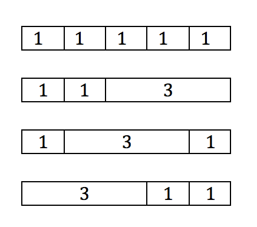

Checkpoint 2
- Using
listAllFilesas a guide, write a method that has oneFileargument: if the argument is a directory, the method returns the total number of files below it. If the argument represents a file, the method just returns 1.public static int countFiles(File f) { ... - A mason is using rectangular bricks to make a walkway. He has bricks that are 3 feet long and bricks that are 1 foot long. If the walkway is a total of n feet long, how many different ways are there to lay out bricks for the walkway?
For example, if n is 5, there are four possibilities:

Your method should look like this:
public static int countPatterns(int n) { // TODO }Tip: What if n is 100? He can start with a 1-foot brick (and then do 99 feet more) or else he can start with a 3-foot brick (and then do 97 feet more).